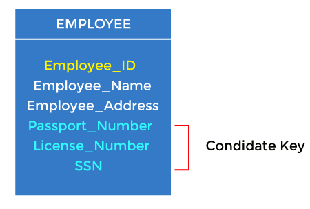

Keys play an important role in the relational database. It is used to uniquely identify any record or row of data from the table. It is also used to establish and identify relationships between tables. 
It is the first key used to identify one and only one instance of an entity uniquely. An entity can contain multiple keys, as we saw in the PERSON table. The key which is most suitable from those lists becomes a primary key.
In the EMPLOYEE table, ID can be the primary key since it is unique for each employee. In the EMPLOYEE table, we can even select License_Number and Passport_Number as primary keys since they are also unique.
A candidate key is an attribute or set of attributes that can uniquely identify a tuple.
In the EMPLOYEE table, id is best suited for the primary key. The rest of the attributes, like SSN, Passport_Number, License_Number, etc., are considered a candidate key.
Super key is an attribute set that can uniquely identify a tuple. A super key is a superset of a candidate key
In the above EMPLOYEE table, for(EMPLOEE_ID, EMPLOYEE_NAME), the name of two employees can be the same, but their EMPLYEE_ID can't be the same. Hence, this combination can also be a key.
oreign keys are the column of the table used to point to the primary key of another table.
Every employee works in a specific department in a company, and employee and department are two different entities. So we can't store the department's information in the employee table. That's why we link these two tables through the primary key of one table.
In the EMPLOYEE table, Department_Id is the foreign key, and both the tables are related.
One key is chosen as the primary key from these candidate keys, and the remaining candidate key, if it exists, is termed the alternate key
Whenever a primary key consists of more than one attribute, it is known as a composite key. This key is also known as Concatenated Key.